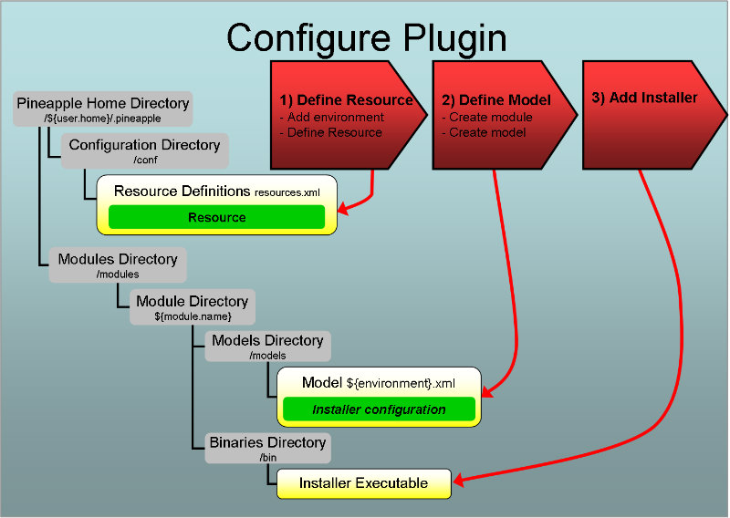

Introduction
Overview
Invoking the plugin
The plugin is invoked by the core component when the core component is used by one of the Pineapple clients. To trigger invocation by the core component the plugin needs to be configured.
Configuration
Three steps are needed to configure the plugin:
- Define resource: Define resource which enabled usage of the the plugin. For this particular plugin the resource doesn't define a manageable entity in some tagret environment but only serves to setup the execution of the plugin.
- Define the module model and add content to the model by defining installation instructions in the model. The installation instructions are used to direct the installation of the JVM or validate the installation of the JVM. The model is defined using the The JRockit installation plugin schema.
- Download installer and add it to the module.
For more info about configuration of plugins:
- For info about resources and credentials read the Environment configuration document.
- For info about modules and module models read the Modules configuration document.
Supported operations by the plugin
The plugin supports the operations:
- test
- deploy-configuration
- undeploy-configuration
For more information about the default operations, refer to the Operation and workflow reference.
Execution of the test operation
When the plugin is invoked with this operation and a module model which contains entities defined by the plugin schema then the plugin will:
- Test that the specified JVM is installed locally on the computer where the plugin is executed by validating:
- That the JVM executable (e.g. java.exe on Windows) can be found in the expected directory.
- That the JVM, when invoked with the -version flag, returns the expected version info.
Execution of the deploy-configuration operation
When the plugin is invoked with this operation and a module model which contains entities defined by the plugin schema then the plugin will:
- Validate whether the JVM is already installed locally on the computer where the plugin is executed.
- If the JVM already is installed, then the plugin skips the installation of the JVM.
- If the JVM isn't installed, then the JVM is installed locally on the computer where the plugin is executed.
Execution of the undeploy-configuration operation
When the plugin is invoked with this operation and a module model which contains entities defined by the plugin schema then the plugin will:
- Validate whether the JVM is already installed locally on the computer where the plugin is executed.
- If the JVM already is installed, then the plugin uninstalls the JVM from the computer where the plugin is executed.
- If the JVM isn't installed, then the plugin skips the uninstallation of the JVM.
Define resource
The purpose of defining a resource for this plugin serves to define a mapping between the resource ID and the plugin ID. The resource ID is the user defined key which is referenced from module models which are targeting the resource. The plugin ID is the Java package name which implements the plugin: com.alpha.pineapple.plugin.jrockit.installation.
To define a new resource, add a resource element to the target environment in the configuration file ${pineapple.home.dir}/conf/resources.xml:
<?xml version="1.0" encoding="UTF-8"?>
<configuration xmlns="http://pineapple.dev.java.net/ns/environment_1_0"
xmlns:xsi="http://www.w3.org/2001/XMLSchema-instance">
<environments>
<environment id="local-environment" >
<resources>
<resource id="jrockit-install"
plugin-id="com.alpha.pineapple.plugin.jrockit.installation" />
</resources>
</environment>
</environments>
</configuration>
For all the details about configuration of environments and resources, please visit the Environment Configuration Reference.
The semantics of the resource element is:
Define the module model
A Pineapple module defines what the different plugins should do in a set of target environments.
The JRockit installation plugin schema
This plugin defines a schema named The JRockit installation plugin schema which defines the http://pineapple.dev.java.net/ns/plugin/jrockit_installation_1_0 namespace. For more information about where the schema can be found, refer to the Schema locations for plugins page.
Name and location of the the module model file
Installation instructions are defined in the module model files which are located at ${module-dir}>/models/${environment}.xml where:
- ${module-dir} is the module root directory which identifies the module with a unique name and version.
- ${environment}>.xml is a module model file for a target environment, with ${environment} substituted with the environment name, e.g. local-environment.xml for an environment named local-environment. In the context of the JRockit installation plugin each model contains installation instructions for different environments.
If the module model file doesn't exist for an environment where the JRockit should be installed/validated, then create the file and name it after the target environment, e.g. local-environment.xml for an environment named local-environment.
The module model configuration schema
Module model files are defined using the module model configuration schema which defines the http://pineapple.dev.java.net/ns/module_model_1_0 namespace. Since module model files contain elements from multiple namespace all the elements and attributes should be qualified. The header and root element should be defined as (look in the Modules configuration document for more details):
This example shows definition of the minimal model file for local-environment:
<?xml version="1.0" encoding="UTF-8"?> <mmd:models xmlns:xs="http://www.w3.org/2001/XMLSchema-instance" xmlns:mmd="http://pineapple.dev.java.net/ns/module_model_1_0" />
Adding the plugin schema to the model
The next step is to include the The JRockit installation plugin schema to get access to the entities defined by the schema:
<?xml version="1.0" encoding="UTF-8"?> <mmd:models xmlns:xs="http://www.w3.org/2001/XMLSchema-instance" xmlns:mmd="http://pineapple.dev.java.net/ns/module_model_1_0" xmlns:jip="http://pineapple.dev.java.net/ns/plugin/jrockit_installation_1_0" />
Now we have a minimal module model file with three namespaces:
- xs: The basic XMLSchema schema which is only used in the root element of the document.
- mmd: The module model schema which is used to define the skeleton of a model file.
- jip: The JRockit installation plugin schema which is used to define installation instructions for JRockit.
Defining the model which targets resources
Add a new model with a target-resource attribute. The value of the target-resource should match the id of the resource which was defined previously in the section Define resource, e.g. redshark-wbem:
<?xml version="1.0" encoding="UTF-8"?>
<mmd:models xmlns:xs="http://www.w3.org/2001/XMLSchema-instance"
xmlns:mmd="http://pineapple.dev.java.net/ns/module_model_1_0"
xmlns:jip="http://pineapple.dev.java.net/ns/plugin/jrockit_installation_1_0" />
<mmd:model target-resource="jrockit-install">
<mmd:content />
</mmd:model>
</mmd:models>
Add content to the model which uses plugin through the jrockit-install reference:
<?xml version="1.0" encoding="UTF-8"?>
<mmd:models xmlns:xs="http://www.w3.org/2001/XMLSchema-instance"
xmlns:mmd="http://pineapple.dev.java.net/ns/module_model_1_0"
xmlns:jip="http://pineapple.dev.java.net/ns/plugin/jrockit_installation_1_0" />
<mmd:model target-resource="jrockit-install">
<mmd:content>
<jip:jrockit>
</jip:jrockit>
</mmd:content>
</mmd:model>
</mmd:models>
Define installation instructions in the module model
Define installation instructions which directs the installation of the JVM:
Example:
<?xml version="1.0" encoding="UTF-8"?>
<mmd:models xmlns:xs="http://www.w3.org/2001/XMLSchema-instance"
xmlns:mmd="http://pineapple.dev.java.net/ns/module_model_1_0"
xmlns:jip="http://pineapple.dev.java.net/ns/plugin/jrockit_installation_1_0" />
<mmd:model target-resource="jrockit-install">
<mmd:content>
<jip:jrockit>
<jip:r27 installer="./bin/jrmc-3.1.0-1.5.0-windows-ia32.exe"
target-directory="c:\jrockit\R27.6.3-1.5.0_17"
install-public-jre="false" />
</jip:jrockit>
</mmd:content>
</mmd:model>
</mmd:models>
Selecting which version to install
The plugin supports the installation of these version of JRockit:
- R27.x
- R28.x
Each version has different stanzas due to differences in the configuration options for the JRockit installers.
r27 element
Defines installation instructions for JRockit R27.
The semantics of its attributes is explained in the next sub sections:
installer attribute
Mandatory attribute, which defines the location of the installer which is used to install the JVM. The location can either be absolute or local to the module.
- Example of an absolute path on Windows: C:\Documents and Settings\mrpono\.pineapple\modules\jrockit-r27-example\bin\jrmc-3.1.0-1.5.0-windows-ia32.exe
- Example of an path local to the module, where the modulepath expression is resolved to the root directory of the module: modulepath:bin\jrmc-3.1.0-1.5.0-windows-ia32.exe
r28 element
Defines installation instructions for JRockit R28.
The semantics of its attributes is explained in the next sub sections:
installer attribute
Mandatory attribute, which defines the location of the installer which is used to install the JVM. The location can either be absolute or local to the module.
- Example of an absolute path: C:\Documents and Settings\mrpono\.pineapple\modules\jrockit-r28-example\bin\jrmc-4.0.0-1.6.0-windows-ia32.exe
- Example of an path local to the module, where the modulepath expression is resolved to the root directory of the module:: modulepath:bin\jrmc-4.0.0-1.6.0-windows-ia32.exe. At runtime the expression modulepath: is resolved to the directory where the module is located. If the module is located in the directory C:\Documents and Settings\mrpono\.pineapple\modules\another-jrockit-r28-example>> then the local path is resolved to <<<C:\Documents and Settings\mrpono\.pineapple\modules\another-jrockit-r28-example\bin\jrmc-4.0.0-1.6.0-windows-ia32.exe
Download installer
Download the appropiate installer and add it at the location specified by the installer attribute defined above.